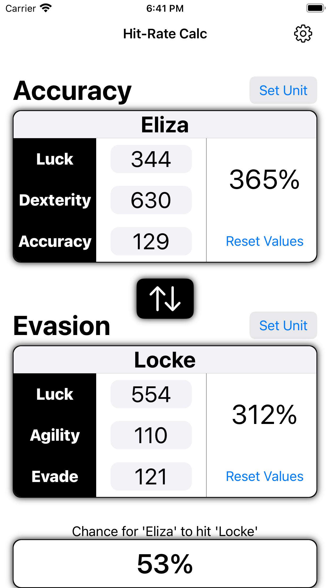
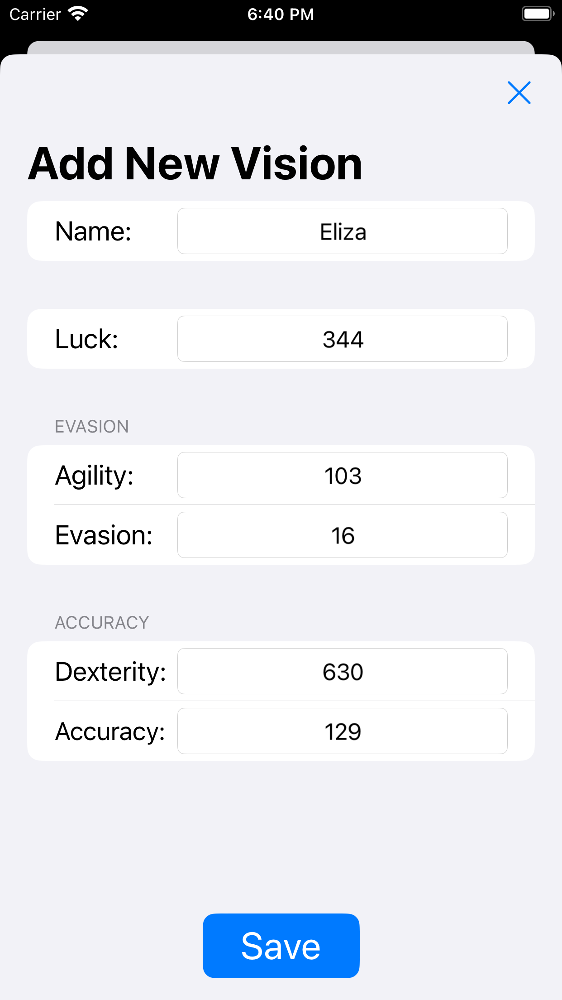
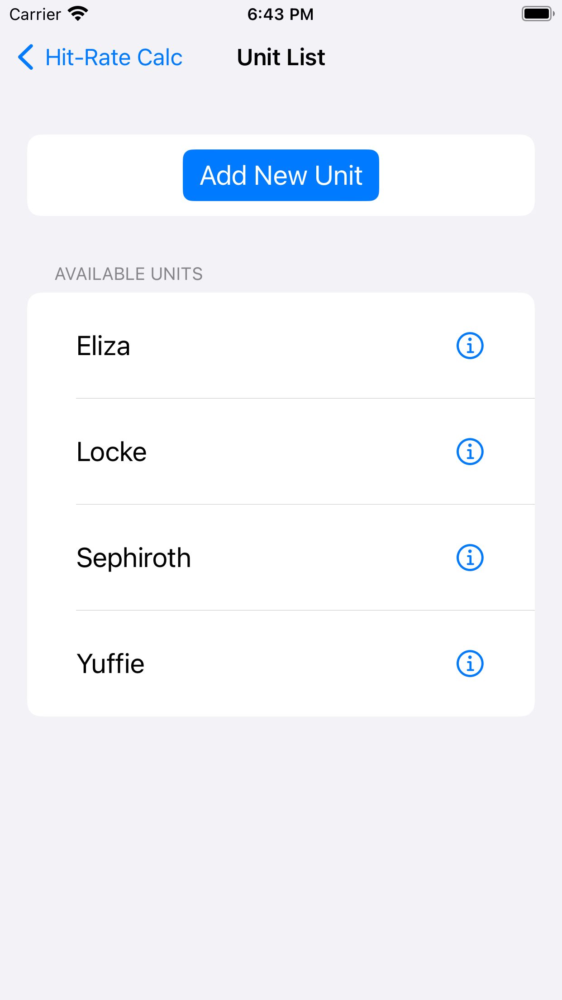

Calculate Your Hit Rate in FFBE: WOTV with HitRateCalc
HitRateCalc is a free app that helps you calculate your hit rate in Final Fantasy Brave Exvius: War of the Visions. It's easy to use and can help you optimize your gameplay by providing accurate hit rate calculations. Save a list of you favorite units to reference back to whenever you need to recheck your stats.
HitRateCalc is only available for iOS. Check it out on the App Store
Screenshots


